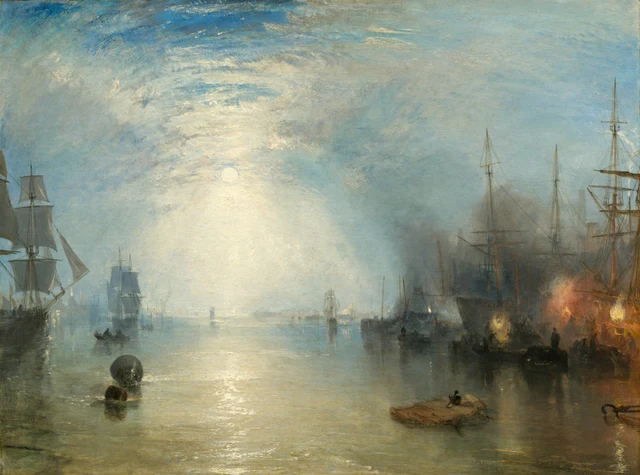

Begin with the moon, then let your eye travel down. Its pale disc hangs a little left of centre, surrounded by a brightness whose edges are difficult to find. That brightness passes through distant shipping, reaches the water, and breaks into a path of reflections coming towards us. Follow it, and the harbour seems spacious and quiet. Then the orange-yellow fires on the right draw us aside. Beneath the tall ships, someone is bending, someone stands upright, and other small bodies are still entangled in the dark.

Painted in 1835, the scene is set in the Shields harbour area on the lower River Tyne in England. The title names a particular occupation. Keelmen handled shallow, flat-bottomed boats that carried coal out to the larger seagoing colliers. Alongside those ships, they shovelled the cargo upwards from the low keels, over the taller vessels’ sides and into the ships. This was one transfer in coal’s journey from the mining districts into long-distance trade. Here, the fuel sustaining Britain’s expanding industries and urban life passed between boats on the river, lifted over their sides by human strength. Coal transport history; Background on the Tyne keelmen
Turner exhibited the painting at the Royal Academy that year. He made it for the Manchester textile manufacturer Henry McConnel, as a companion to Venice: The Dogana and San Giorgio Maggiore, painted in 1834 and already in McConnel’s collection. These two harbour views therefore belonged both to a landscape tradition and to a collector whose wealth was bound up with commerce. Provenance and exhibition history; The commission and companion painting
Our starting point is a small but consequential distinction: brightness does not always make things easier to see. Moonlight gathers the harbour into a continuous spectacle; firelight marks the places where work is happening. Yet to see the workers, we still have to search among haze, hulls, and overlapping outlines. The painting repeatedly brings these different experiences of looking together.
1 The waterway opens before us
The canvas is a little over a metre wide. Standing before it, we would see the ships on both sides and the central channel spread across a substantial field. On a small screen, their relation can shrink to a broad arrangement of light and dark. The people we will later enlarge already occupy the margins of a much more expansive view.
Sky fills roughly the upper two-thirds. The proportion matters. The masts are tall and the people tiny, yet a great deal of space remains above them. The moon does not sit near the top of the canvas. It hangs relatively low within the sky, enclosed by luminous cloud and haze. Blue-grey tones grow paler as they approach it. Beneath the moon, even the distinction between sky and water begins to loosen.
There is still a horizon. A few sails, thin masts, and minute lights close to the water mark it intermittently. Their delicacy makes them poor barriers: they cannot firmly divide one region from the other. Moving down from the moon, our eyes can cross them almost without noticing. Only when the broader foreground ripples come into view do we fully register that we are looking across water.
The vessels at either side give this passage its edges. On the left, the frame cuts into the nearest sail, whose grey-white surface is more readily legible than the hull below. On the right, masts, yards, and rigging gather into a darker network. The two sides are unequal, but together they leave the distance open. Our position feels less like a viewpoint outside the harbour than a place already among its ships, with water still available to look through ahead.
That opening is not empty. A buoy in the left foreground, a small boat farther out, and a low, flat piece of floating timber towards the right provide intermediate stopping places. Look from the nearby dark forms towards sails that become almost transparent in the distance. Depth emerges by stages. Perspective contributes, but so does the gradual loss of detail: distance is something the objects undergo as they become harder to distinguish.
The moon’s reflection gives us a further way into that space. It is no tidy white pillar suspended from the lunar disc. The light is diffuse near the horizon; closer to us, it becomes horizontal marks of different lengths and widths. Grey-green, pale brown, and darker gaps interrupt them. Our eyes join the fragments into a route through the picture while also registering the water that breaks the route apart. We can feel depth extending away and small ripples spreading before us at the same time.

2 Moving towards the fires
Now turn to the lower right. Here there is nothing like the spacious opening around the moon’s reflection. Large hulls loom behind low boats, and people occupy the narrow interval between these different heights. Orange flames rise between two paler, yellow-white lights; warm light and smoke spread into one another. What first looked like a handful of bright accents in a night scene begins to separate into particular places where particular things are happening.
The upright figure nearest the front is comparatively easy to find. Head, shoulders, and torso stand out against the brightness behind him. Lower down, his body gradually joins the darkness of the boat and its load. To his left, someone bends forward with head lowered. To the right, more curved bodies and long slanting poles become visible. Outlines appear in one place and break off into adjoining dark paint in another. We can distinguish one action from another without being able to draw a complete boundary around every body.

Once we know how the coal was transferred, the difference in height acquires a physical weight. The cargo has already reached a boat, but it still has to be lifted from that lower position over the taller ship’s side and into the vessel. The work involves raising, transferring, and bending down again. Weight must repeatedly pass over a ship’s side. The painting gives us only certain postures; transport history tells us what sustained activity those postures belong to. Brought together, they keep the dark figures from becoming mere decoration in a nocturnal harbour. The transfer process
The way light separates a person from the background also determines how much we can know of him. Greater brightness behind a head or shoulder can sharpen its edge without illuminating the face turned towards us. A person becomes more conspicuous while remaining difficult to identify. Between seeing that someone is there and seeing what that person looks like lies a short distance that the available light does not necessarily help us cross.
It is worth lingering over the differences among these gestures. Calling them all “workers’ silhouettes” risks flattening distinctions we have just begun to notice. One figure holds himself relatively straight; another folds downwards; elsewhere, an outline reaches out. None has been given an individually legible face, yet they are not simply an interchangeable row of signs. We can follow each discernible movement a little further and allow its difference to remain. Such attention does not require us to invent a face, a feeling, or a life story beyond what the image offers.
3 What recedes when we step back
Return from Figure 3 to the whole painting, and the change is immediate. Bending and reaching become small again, while the flames retain their prominence. People and boats merge into a rhythm of dark shapes. The long moonlit route resumes its command of the view. Coal-loading has not vanished; it has become easier to take in as one component of a beautiful harbour scene.
The title puts a slight pressure on that experience. It names the keelmen and their action, while the picture gives most of its area to sky and water. We know that we should look for people, but our eyes are readily carried away by a light much larger than any person. Title and image do not cancel each other out. Together, they turn the question of who occupies the centre of the painting into something we have to answer by looking.
Turner is a central figure in British Romantic painting. Within that tradition, the wonder, awe, and intensity produced by a natural scene can matter as much as the identification of its location. Here, moonlight, haze, and the harbour’s scale produce a spectacle exceeding an ordinary view. Its attraction has precise visual grounds. The breadth of the sky, the open passage through the shipping, and the pull between cooler and warmer light all help determine where we linger. Romanticism and the sublime
Spectacle, however, has a viewing distance. From farther away, people, ships, and flames readily become a coherent relationship of colour and light. Move closer, and the height between keel and collier reappears as something a body must repeatedly overcome. The more distant view remains valid. Its encompassing impression needs the closer encounter if we are to retain what the beautiful whole contains.
An 1835 review in the London Literary Gazette, quoted in John Hayes’s 1992 National Gallery of Art catalogue, makes one expectation about such beauty unusually plain. As Hayes reports it, the reviewer regretted that this splendid moonlight was spent on coal workers and would rather have had it guide lovers to a meeting. Its preference is revealing: a lovely moonlit night ought to accompany romance; heavy work seems an unworthy occupant of such light. Turner’s picture gives both the same space. Looking now, we can ask whether our own attention still quietly selects the people and activities permitted to belong in a beautiful landscape. Hayes catalogue, printed p. 280
The painting rewards movement between these distances. Concentrating exclusively on labour would miss the pictorial arrangements that make the harbour magnificent. Admiring only the night would allow us to forget how much work that magnificent scene holds. We can sustain both experiences. Taking the little figures seriously does not require first dismissing the painting’s beauty.
Even “quiet” begins to mean something different. The distant water lies flat; nearby reflections break gently across it. But once we recognise the poses on the right, ongoing activity enters that stillness. The painting supplies no sound, yet work has acquired a rhythm. Returning to the central waterway, we find that the quiet of our first encounter is no longer empty.
4 Two kinds of light on the same water
Moonlight and firelight readily suggest cool and warm. Broadly, the distinction holds: a blue-grey sky surrounds the pale moon, while orange-red and yellow flames enter the dark company of ships on the right. Each attracts us, preventing attention from settling permanently at a single centre.
Closer inspection complicates the division. A milky yellow also surrounds the moon, and the water beneath it warms as it approaches us. At their edges, the fires quickly mingle with grey and brown. Smaller, more distant lights are scattered within the moonlit part of the harbour. Cool and warm lose their neat boundaries as they draw near each other. The sources differ, but their light enters a shared atmosphere and falls on the same river.
Reflections make this particularly clear. The central light stretches towards us, and shorter broken reflections hang beneath the fires on the right. Water does not invent an entirely different behaviour for each source. It disperses both, leaves dark intervals between their bright fragments, and lengthens reflections of hulls alongside them. We can distinguish where light comes from while also gathering its different appearances into one continuous place.
Smoke and haze change this relationship further. Close to the flames, they take on warmth and obscure parts of boats and bodies. Higher up and farther away, they gradually mingle with the sky’s blue-grey. There is no need to assign a particular fuel or origin to every plume. We can keep watching what the atmosphere does: in some places it helps forms appear, in others it makes them difficult to separate. Vision must pass through that air. It does not reach objects through an empty, transparent container.
The companion painting offers a modest further comparison. McConnel brought a British coal harbour at night together with a Venetian harbour in daylight. Different light therefore becomes an immediate way of comparing the two places. A contrast between Britain’s commercial rise and Venice’s decline is also a possible interpretation, one the museum leaves open rather than treating as an established intention. For the painting before us, a closer starting point is already available: once ships and trade enter landscape, light changes how we see them. Discussion of the paired paintings
5 Light has a thickness too
There is another distance worth changing: the distance between looking at a harbour and looking at paint.
Enlarge the reflection on the water. Many bright marks are far from smooth. Their irregular edges resemble small pale pieces pushed, built up, or drawn across a surface. Beside flatter grey-green and brown areas, these highlights acquire shapes of their own. At this scale, the illusion of rippling water briefly weakens. What comes forward is a surface worked by a painter.

The National Gallery of Art’s 1992 systematic catalogue records thick paint, or impasto, in the moon and the highlights on the water, with thinner, flowing application in the sky. This technical observation gives material support to what we have been looking at. Some of the passages that appear most luminous and least tangible are built from relatively substantial paint. The expansive sky’s airy quality is associated with thinner handling. Technical account, printed pp. 278–280
Thickness is not a simple synonym for brightness, nor thinness for distance. Colour, neighbouring values, and the direction of strokes also contribute. We can make a more exact comparison: alone in Figure 4, the pale marks look scattered and tangible; within the whole, those same marks gather below the moon into shimmering water. The material remains present, but a depicted world becomes convincing. Painting joins the two scales, allowing us to see paint and to see light through it.
Step back once more. The reflection leads towards the distance; the fires draw us back towards people. We now know that the brightest areas need not supply the most detail, and that the smallest figures need not matter least to our looking. The close reading comes to rest in a specific return journey: from the attraction of light to the workers, then back to the harbour with their gestures still in mind. The moon remains bright and the night expansive. This time, it is harder to pass lightly over the people beneath the ships.
Optional reading Looking again with SAE
Two practical experiments can extend this encounter through SAE, or Self-as-an-End, aesthetics. The reading above stands on its own; the experiments offer another way to test the relationships we have noticed. General introduction to SAE aesthetics
Begin with the distribution of light. Look at the whole painting for ten seconds and notice where your eyes first settle. Then cover the fires on the right with a piece of paper, leaving the moonlit channel visible. Reverse the arrangement: cover the bright central passage and retain the ships and firelight. A temporary screen or sheet is enough; there is no need to alter the image file.
Ask what happens to breadth, depth, and direction in each view. With the fires on the right covered, does attention move more readily into the distance? With the central light band covered, do light and dark seem more crowded, and do your eyes pause more often at short fragments of outline? The perceptual direction of SAE helps us ask how things appear now, and why certain differences carry more weight in this particular encounter. Uncover the whole painting. Does the pull between its two regions return? Discussion of its spectacle now rests on relationships that other viewers can locate and compare. The beauty of perception
The second experiment requires an interval. Close the image and allow a little time to pass. Then write down three details you remember from the right-hand side. Reopen it and check what you retained. Perhaps the colours of the fires remained vivid while the positions of bodies almost disappeared. Perhaps learning how coal was transferred made the difference in height between the boats and ships especially memorable. Memory selects, and that selection helps determine what we look for next.
SAE considers memory and anticipation within its cognitive direction. Here the entry point is concrete: what form does the absent painting continue to take for us? When we reopen it, are we seeking the firelight we remembered, or looking for people our first impression left out? Checking the image may revise an earlier impression and change what we expect from the next encounter. Recognising a ship or a person already draws on experience; this experiment isolates the further question of how an encounter persists, and how another look corrects what remains. The beauty of cognition
Finally, place these results beside your first impression. If “peaceful” still seems right, identify the stretch of water or spacing of forms that supports it. If the harbour now feels busy, point to the movements that changed your response. Different experiences can remain different while their grounds become shareable. Theory helps a simple liking for the night scene develop into a more precise question: which relationships have I seen, and to whom will I give my attention next time?
Image and source notes
This reading uses the National Gallery of Art’s 4096 × 3042-pixel image. The full view preserves every original byte of the downloaded file. The three details are crops made only at the registered coordinates, without colour adjustment, sharpening, restoration, retouching, or generated content. Screen colour, brightness, and magnification affect what we see. Material information comes from the cited technical catalogue and complements observation of the digital image.
The images fall under the museum’s CC0 open-access policy. That permission applies to the relevant images; it does not license wholesale reproduction of the museum’s research texts. The close reading and experiments are independently written. Links identify the evidence for historical facts, working processes, and technical information; interpretation does not imply museum endorsement. See also References and Image credits and crop register.